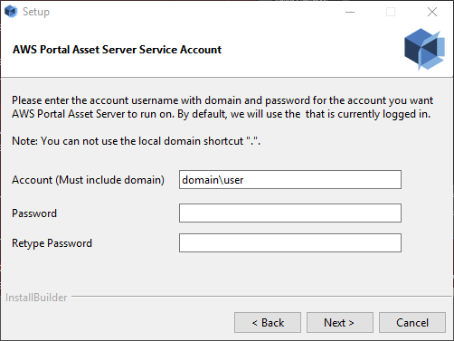
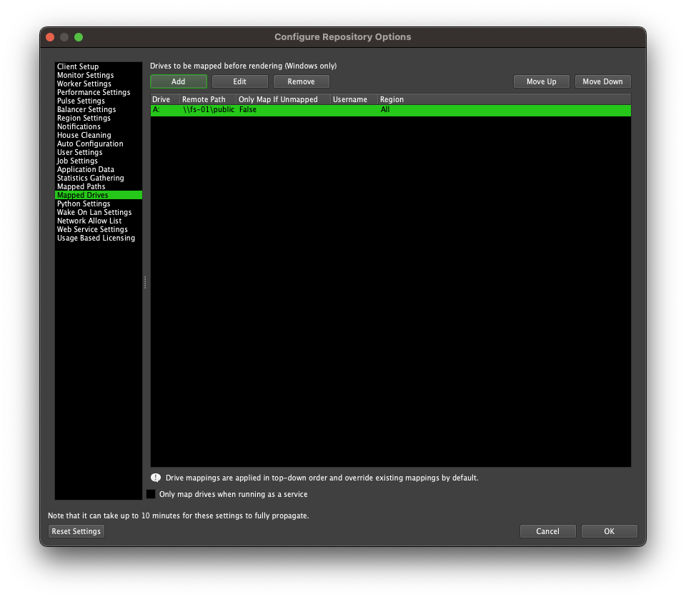

Note
While AWS Portal can enable cloud rendering in Deadline 10, AWS Deadline Cloud is a newer offering that has been built specifically for the cloud. It is a fully managed service that does not require installation or maintenance of infrastructure (e.g., repository, database, or license server). Worker fleet auto-scaling, asset synching, and licensing are all managed natively within AWS by Deadline Cloud. See here for more information on Deadline Cloud and its capabilities.
Advanced AWS Portal Installation Topics¶
Service Account for AWS Portal Asset Server (Windows)¶
It is recommended that you install Asset Server into a custom named account, created just for Asset Server. If you do this, provided that account has permissions to access your networked shares, it will be able to mount your networked shares, even if you are running in a workgroup rather than a domain. Setting up a unique account for Asset Server is also recommended to keep your AWS credentials encrypted within a security context that other services do not have access to.
AWS Portal Link and Asset Server require the use of a service account to run properly. You can specify this account on the “AWS Portal Link Service Account” and “AWS Portal Asset Server Service Account” pages of the AWS Portal installer.
If you wish to change the account that Asset Server runs as, re-run the AWS Portal Link installer and specify the new account.
Drive Mappings with Service Accounts (Windows)¶
In Windows, drive mappings are tied to the account they were created in, so when running software in a different account, they must be re-mapped. Because drive mappings can often be referenced in scene files, it’s necessary to re-map the drives so that Asset Server can access files that are referenced in this way.
Asset Server will automatically map the drives in your Deadline Mapped Drives list (Tools > Configure Repository Options > Mapped Drives) when it starts up.
Some problems can occur however if the account that the service is running in does not have sufficient privileges to access the network shares which are being mapped. Please ensure that the account used for both AWS Portal Link and Asset Server has sufficient privileges to access all necessary network resources.
AWS Portal Server Installer Details¶
During installation of the AWS Portal Asset Server the following will occur:
AWS Portal Asset Server program files will be installed
AWS Portal Asset Server will be configured to run as a service
If you choose to “Create IAM Resources Automatically”, it will perform the actions listed here.
AWS Portal Identity and Access Management (IAM) Resources¶
AWS Portal requires IAM resources in your AWS account to operate. You have a few different options to create these resources. If you choose to “Create IAM Resources Automatically” in the AWS Portal Server installer, or if you run the IAM resource creation script manually, it will do the following:
AWS Portal Gateway IAM Role¶
Create an IAM Role with:
Name:
AWSPortalGatewayRoleTrusted Entity: EC2
Attached IAM Policy: arn:aws:iam::aws:policy/AWSThinkboxAWSPortalGatewayPolicy
AWS Portal Worker IAM Role¶
Create an IAM Role with:
Name:
AWSPortalWorkerRoleTrusted Entity: EC2
Attached IAM Policy: arn:aws:iam::aws:policy/AWSThinkboxAWSPortalWorkerPolicy
AWS Portal Asset Server IAM User¶
Create an IAM User with:
Name:
AWSPortalAssetServerUserAttached IAM Policy: arn:aws:iam::aws:policy/AWSThinkboxAssetServerPolicy
Create credentials for this user, and pass them to the AWS Portal Asset Server using the update_credentials.py script in the Asset Server’s install directory.
Warning
On Linux, these credentials are stored unencrypted, however, they will have their permissions set to 0600.
Per our shared responsibility model, we recommend you take additional steps to protect these credentials such as encrypting the hard drive of the machine which AWS Portal Asset Server is installed on.
Deadline Resource Tracker Access IAM Role¶
Create an IAM Role with:
Name:
DeadlineResourceTrackerAccessRoleTrusted Entity: Lambda
Attached IAM Policy: arn:aws:iam::aws:policy/AWSThinkboxDeadlineResourceTrackerAccessPolicy
DynamoDB Auto Scaling Service-Linked Role¶
Create a service-linked IAM Role with:
Name:
AWSServiceRoleForApplicationAutoScaling_DynamoDBTableService principal:
dynamodb.application-autoscaling.amazonaws.com
Learn more about Service-Linked Roles for Application Autoscaling
Deadline Spot Fleet IAM Role¶
Create an IAM Role with:
Name:
DeadlineSpotFleetRoleTrusted Entity: SpotFleet
Attached IAM Policy: arn:aws:iam::aws:policy/service-role/AmazonEC2SpotFleetTaggingRole
Instance Profiles¶
For each of the IAM Roles we create, we also create an Instance Profile with the same name, and attach the corresponding IAM Role.
Manually Running the IAM Resource Setup Script¶
You can choose to run the IAM resource setup script to create the resources required to operate AWS Portal. These resources are described in AWS Portal Identity and Access Management (IAM) Resources.
Getting the Script¶
You can find the iam_resource_setup.py in the AWS Portal Asset Server’s install directory.
The default install directory depends on your operating system:
On Windows:
C:\Program Files (x86)\Thinkbox\AWSPortalAssetServer\On Linux:
/opt/Thinkbox/AWSPortalAssetServer/
Running the Script¶
You must run the IAM resource setup script on the same machine where you installed AWS Portal Asset Server. To run the script:
Open a command prompt as an Administrator or root.
Navigate to the directory containing the script.
Run the following command depending on your operating system (Note:
"python3/python"is located in the AWS Portal Asset Server’s install directory):Windows:
"python3\python.exe" iam_resource_setup.py --setup-aws-portalLinux or macOS:
"python3/python" iam_resource_setup.py --setup-aws-portal
You will be prompted for your AWS Access Key and AWS Secret Key. Enter your AWS user credentials with Administrator access.